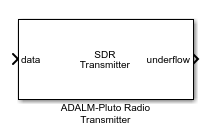
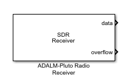

On all SDR blocks, the lost samples port is enabled by default. To disable it:
On the ADALM-PLUTO radio transmitter block, clear the Enable output port for underflow indicator parameter.
To detect underflow during the transmission of radio signals, check the underflow output port on the SDR transmitter block.

During the simulation, check the underflow output port of the transmitter:
A 0 indicates no data samples were lost.
A 1 indicates data samples were lost.
On all SDR blocks, the lost samples port is enabled by default. To disable it:
On the ADALM-PLUTO radio receiver block, clear the Enable output port for overflow indicator parameter.
To detect overflows during the reception of radio signals, check the overflow output port on the SDR block.

During the simulation, check the overflow output port of the receiver:
A 0 indicates no data samples were lost.
A 1 indicates data samples were lost. See Burst Mode.
With ADALM-PLUTO radio transmitter System objects, the underflow output
indicates data loss. The following example demonstrates detecting
lost samples by using an SDR transmitter System object™ for ADALM-PLUTO
radio.
Create a transmitter System object for the ADALM-PLUTO radio.
tx = sdrtx('Pluto')Create transmitter data.
txData = zeros(1000,1);
Transmit the data with tx, and return underflow as
an output argument.
for counter = 1:20 underflow = tx(txData); if (underflow) display('### Warning transmitter underflow occurred, data has been lost.') end end
Check underflow to see if any data loss is
occurring.
A 0 indicates no data loss.
A 1 indicates that an underflow is occurring at the
transmitter.
With ADALM-PLUTO radio receiver System objects, the overflow output
indicates data loss. The following example demonstrates detecting
lost samples by using an SDR receiver System object for ADALM-PLUTO
radio.
Create a receiver System object for the ADALM-PLUTO radio.
rx = sdrrx('Pluto')Create data to receive.
rxData = zeros(1000,1);
Receive the data with rx, and return overflow as
an output argument.
for counter = 1:20 [data,datavalid,overflow] = rx(rxData); if (overflow) display('### Warning receiver overflow occurred, data has been lost.') end end
Check overflow to see if any data loss is
occurring.
A 0 indicates no data loss.
A 1 indicates that an overflow is occurring at the
receiver. See Burst Mode.